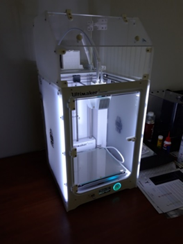
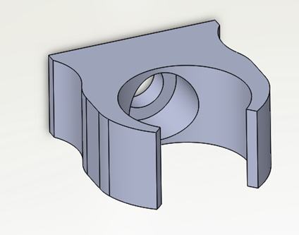
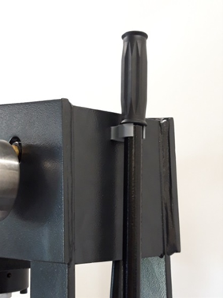

üõ†Ô∏è Projet personnel ‚Äì Conception d‚Äôun bureau d‚Äôangle

Dans le cadre d’un projet personnel, j’ai réalisé le design d’un bureau de travail en angle, avec pour objectif d’optimiser l’espace tout en proposant une forme fonctionnelle et esthétique. Le projet s’est concentré uniquement sur la conception du meuble lui-même, sans intégration dans un environnement ou une scène. Cette réalisation m’a permis de travailler les proportions, la perspective et la lisibilité du mobilier dans une vue isolée, mettant en valeur le design pur de l’objet.
üõ† Projet Soletanche-Bachy ‚Äì Conception d‚Äôune √âchelle Motoris√©e

Objectif du projet
Ce projet s'inscrit dans une problématique réelle rencontrée sur les chantiers de forage. L'entreprise Soletanche souhaitait une solution technique permettant aux ouvriers d'accéder à une passerelle via une échelle à la fois sécurisée, adaptable et motorisée. Le défi principal était de garantir un système fiable, démontable rapidement, et capable de s'ajuster automatiquement à la hauteur du sol.
Travail personnel réalisé
Glissement motorisé de l'échelle
J'ai conçu un mécanisme motorisé à base de pignons et de crémaillère permettant à l'échelle de s'étendre ou se rétracter automatiquement selon la hauteur du sol. Ce système s'appuie sur une vis sans fin pour garantir la précision et la sécurité du mouvement. Un capteur a également été intégré afin de détecter la position de l'échelle en temps réel.
Conception mécanique
J'ai adapté la structure de l'échelle en élargissant sa base pour répondre aux normes. Des glissières à galets ont été choisies pour le guidage, et j’ai conçu plusieurs pièces spécifiques (supports, entretoises, carters) afin d'assurer la compatibilité entre les composants mécaniques. La modélisation CAO a été intégralement réalisée par mes soins.
Assemblage
Une fois les composants validés, j'ai procédé à l'assemblage partiel de la maquette, en fixant les moteurs, capteurs, engrenages et glissières. Ce travail m’a permis de valider le montage, d’ajuster certains éléments et de confirmer la cohérence mécanique globale du système.
Calculs et Validation
Des calculs de résistance ont été effectués sur les supports de l’échelle afin de garantir la fiabilité structurelle. Les résultats obtenus (0,8 MPa) étaient largement en dessous de la limite élastique de l’acier (235 MPa), validant ainsi la robustesse du système. Les jeux fonctionnels ont également été étudiés pour assurer la fluidité de mouvement (Ja = 382 mm).
Matériaux
L’échelle est en aluminium pour sa légèreté et sa résistance à la corrosion. Les pièces de support ont été fabriquées en acier pour garantir leur solidité. Quant aux carters de protection, ils ont été réalisés en plastique moulé, un matériau à la fois léger, économique et adapté à la fabrication en série.
Bilan
Ce projet m’a permis de mettre en œuvre l’ensemble des compétences acquises durant mon BTS CPI. De la conception à l’intégration mécanique, en passant par le calcul, l’assemblage et le choix des matériaux, j’ai mené un travail complet et structurant. Il m’a également offert une approche concrète du travail en équipe et des contraintes industrielles réelles. Une expérience marquante dans mon parcours d’étudiant.
⚙️ Projet technique – Protection de plateau pour vélo (impression 3D)

Dans le cadre d’un exercice proposé par notre professeur en BTS, il nous a été demandé de concevoir une protection pour les plateaux d’un vélo.
La pièce devait être fixée sur le châssis du vélo et pensée pour être imprimée en 3D. L’objectif du projet était de répondre à une problématique concrète en alliant conception mécanique, contraintes techniques réelles et fabrication additive.
Ce travail m’a permis d’aborder des notions comme la résistance des matériaux, les fixations, les tolérances liées à l'impression 3D, ainsi que l’ergonomie de la pièce une fois montée.
üß© Travail collaboratif ‚Äì Pr√©sentation d‚Äôun bo√Ætier modulaire (√âpreuve de BTS CPI)

Dans le cadre de l’épreuve finale du BTS CPI, il nous a été demandé de travailler en binôme — avec un élève d’un autre établissement — sur la reprise et la compréhension d’un plan existant portant sur un boîtier modulaire.
L’objectif principal de cette épreuve était de s’approprier un projet technique déjà conçu, d’en analyser les différentes fonctions et solutions techniques, puis d’en faire une présentation orale claire et argumentée. Ce travail nous a permis de démontrer nos capacités à lire et interpréter des plans industriels, à collaborer à distance, et à structurer une communication technique efficace.
üõ†Ô∏è Cr√©ation d‚Äôun emboutpince ‚Äì Projet r√©alis√© en stage chez FL Environnement
  Dans le cadre de mon stage, il m’a été demandé de concevoir et modéliser une pièce de sécurité destinée à maintenir un levier sur une presse. Ce levier présentait un risque potentiel de blessure lorsqu’il n’était pas utilisé. L’objectif était donc de bloquer le levier de manière sûre, tout en permettant de le retirer et le remettre facilement.
Après avoir relevé les côtes du levier, j’ai imaginé une pièce en forme de pince, fixée à la presse par une vis et un écrou. Cette pièce, appelée emboutpince, a été conçue pour bloquer le levier au niveau du poignet en caoutchouc.
Un point important dans la conception : la pièce ne possède aucune résistance mécanique à elle seule. C’est uniquement grâce à l’appui de la tête de vis dans la pièce que l’emboutpince gagne sa rigidité et sa tenue. Ce principe a permis de limiter la masse et d’optimiser le temps d’impression sans compromettre la fonction.
Le modèle a été réalisé sur ordinateur en 25 à 30 minutes, puis imprimé en 3D en 1 heure et 10 minutes. Après un test en conditions réelles, la pièce s’est révélée parfaitement fonctionnelle.